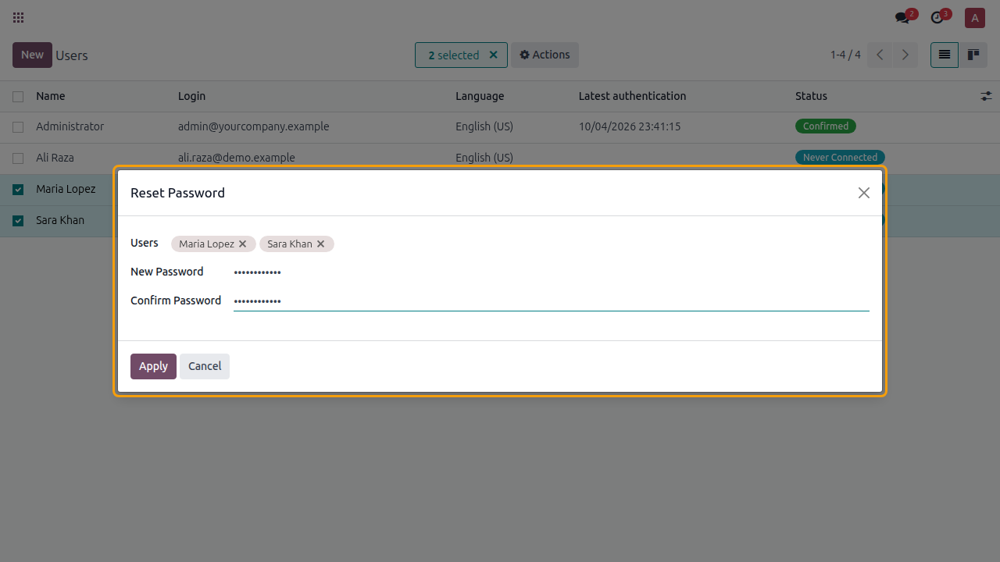
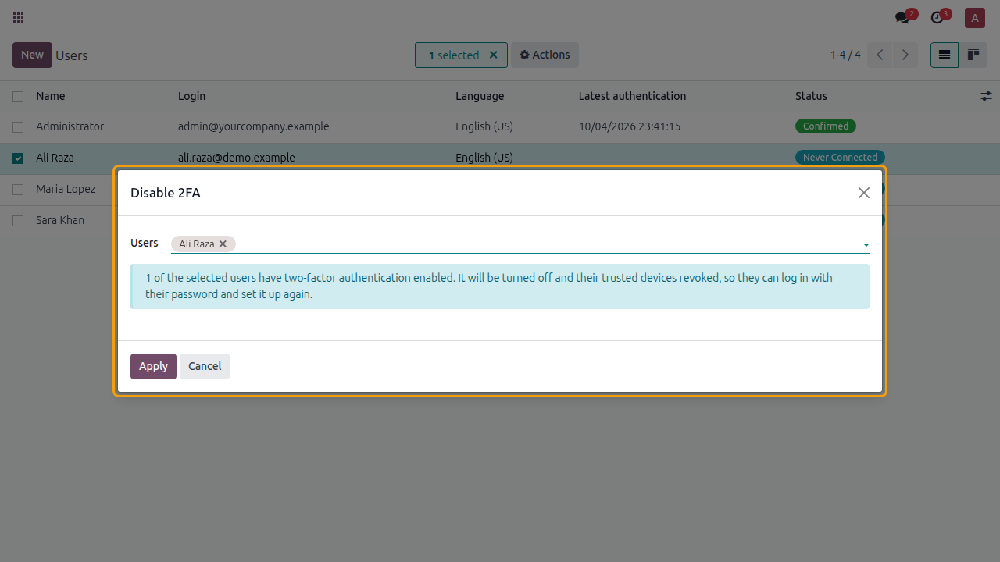
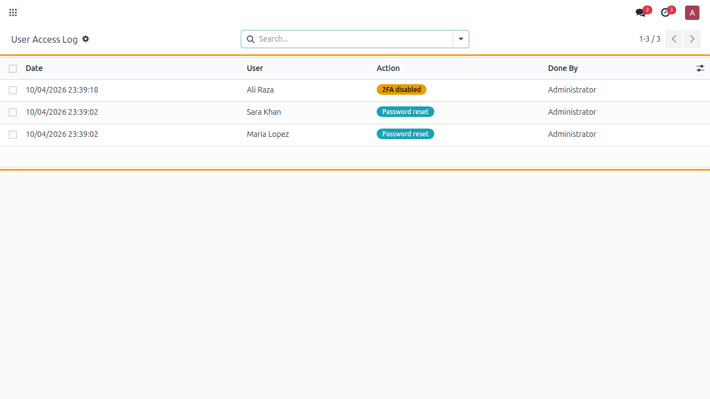

"I forgot my password" and "I lost my phone, I can't log in" are the most common support tickets. This module lets Odoo administrators fix both straight from the Users list, for one user or many, and records every change.
Settings › Users › select users › Actions › Reset Password

Actions › Disable 2FA — trusted devices are revoked so the user can set it up again

Settings › Users & Companies › User Access Log

I'm ABBAS. I build Odoo modules tailored to how your business works — admin tools, CRM automations, custom reports and integrations for Odoo 17, 18 & 19.